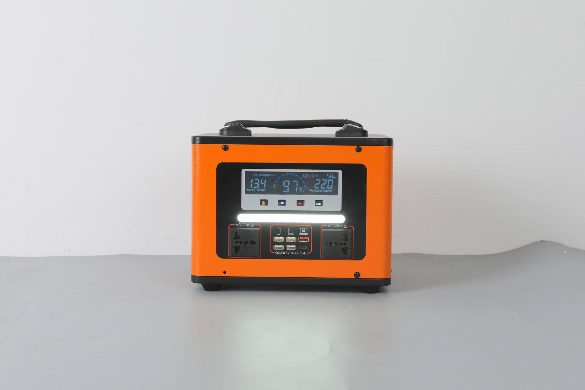

Choosing the right portable power station for your market can be challenging, especially with dozens of models and specifications to compare. Whether you are a first-time importer or an experienced distributor expanding your product line, this guide will help you select the right products for your customers.
Size the product from the load, not from the price list. Add up the wattage and daily hours of the appliances your customers will actually run, add 20-30% margin, and check the surge rating before anything else. In markets with long daily outages, the 500W class is normally the volume seller, the 1000W class serves shops and clinics, and the 300W class works as an affordable entry product.

Two markets with the same income level can need completely different products. Four characteristics decide the mix you should stock.
The number of outages matters less than their length. A market with three one-hour cuts per day needs a different product from a market with one eight-hour cut. Long single outages push buyers toward larger batteries; frequent short cuts favour fast-charging units with moderate capacity. In Nigeria, where daily outages commonly run four to twelve hours, the M500-06 (512Wh) and P1000-01 (1100Wh) match the pattern far better than a small unit.
Heat is the main driver of battery ageing. In hot climates, buyers need to know that the unit should be kept shaded and ventilated, and that recharging immediately after long sun exposure shortens life. Cold markets have the opposite problem: low-temperature charging restrictions matter more than high-temperature performance. See our battery technology guide for the chemistry comparison.
Price-sensitive markets respond to an entry model that still looks and feels solid. Models such as M400-01 ($89 retail) give you an affordable entry point, while the larger units carry the margin. Distributors targeting commercial clients should stock the 1000W class, because those buyers compare against generator running costs rather than against other power stations.
Before ordering, write down: typical outage length, the three appliances customers mention most, the local retail price of a small generator, whether solar charging is expected, and the certifications your importer requires. These five answers determine your product mix more reliably than a competitor's shelf.
The table below reflects current retail pricing and is the fastest way to build a starter line-up.
| Use case | Recommended model | Retail price | Capacity |
|---|---|---|---|
| Personal / entry level | M300-03 | $139 | 266Wh |
| Affordable entry alternative | M400-01 | $89 | 300W class |
| Home backup / volume seller | M500-06 | $219 | 512Wh LiFePO4 |
| Small business | M700-01 | $269 | 960Wh |
| Commercial / heavy use | P1000-01 | $339 | 1100Wh |
Divide usable watt-hours by the continuous load. A 512Wh station running a 100W load gives roughly five hours before efficiency losses; the same station running a 500W load gives about one hour. Use this arithmetic with your customers rather than quoting a single headline number, because unrealistic runtime expectations create returns and warranty disputes.
| Typical load | Planning range | Note |
|---|---|---|
| Router, phones, LED lighting | 20-100W | A 300W class unit runs many hours |
| TV, laptop, fan, communications | 100-300W | 500W class is the practical choice |
| Small fridge or freezer | Cycling load with motor start-up | Check surge rating; 500W or higher |
| Power tools, pump, several rooms | High continuous or start-up load | 1000W class or fixed system |
Battery chemistry directly affects how many warranty claims you will handle. All SunVolt Energy stations use Grade A LiFePO4 cells for cycle life and thermal stability. When comparing suppliers, ask for the cycle rating at a stated depth of discharge, not just a cycle number in isolation — and ask what the capacity is at end of life, because that is what determines whether your customer comes back.
In markets with unreliable grid power, solar charging capability frequently drives the purchase decision. All our models support solar charging through MPPT controllers, and we supply folding solar panels from 100W to 200W as complementary products.
As a rule of thumb, a 100W panel refills a 500Wh station over a good day of sun, and a 200W panel halves that. Bundle a panel with the station and you raise the average order value while solving the customer's actual problem — which is not having a socket to charge from.
Distributor margin depends on landed cost, not on the factory price. Build your number from these components:
Our factory pricing is structured to leave distributors a healthy margin at normal local retail levels. Volume pricing is available for container orders; ask for a quotation that separates EXW and FOB so you can model both.
Certification requirements vary by destination and are the most common cause of delayed shipments. CE, FCC and ROHS are baseline documents most buyers request. Some countries add their own scheme — SONCAP in Nigeria, EAC in the Eurasian Economic Union, and similar approvals elsewhere. Confirm the exact requirement with your importer or customs broker before placing a large order rather than after the container has shipped.
Order two or three sample units from different capacity classes. Run them on the appliances your customers actually use, check how they behave on a weak or intermittent grid, and confirm the packaging survives the shipping route. A sample order costs very little compared with a container of the wrong product mix.
Start from the load, not the model. List the appliances your customers will run with their wattage and daily hours, add 20-30% for losses and ageing, and check the surge rating for anything with a motor or compressor.
The 500W class is usually the volume seller because it covers lighting, fans, communications and a television through an evening. The 1000W class sells to shops and clinics, and the 300W class works as an affordable entry product.
Yes, but the exact set depends on the destination. CE, FCC and ROHS are baseline. Confirm any national scheme with your importer before ordering.
Two or three units across different capacity classes, tested on real local loads before you commit to volume.
We recommend ordering 2-3 sample units first to test in your market before committing to a container order. Tell us your market and the appliances your customers use, and we will recommend a starting line-up. Contact us on WhatsApp to discuss your market needs.
Contact us on WhatsApp for current pricing, samples, and shipping rates.
Chat on WhatsApp